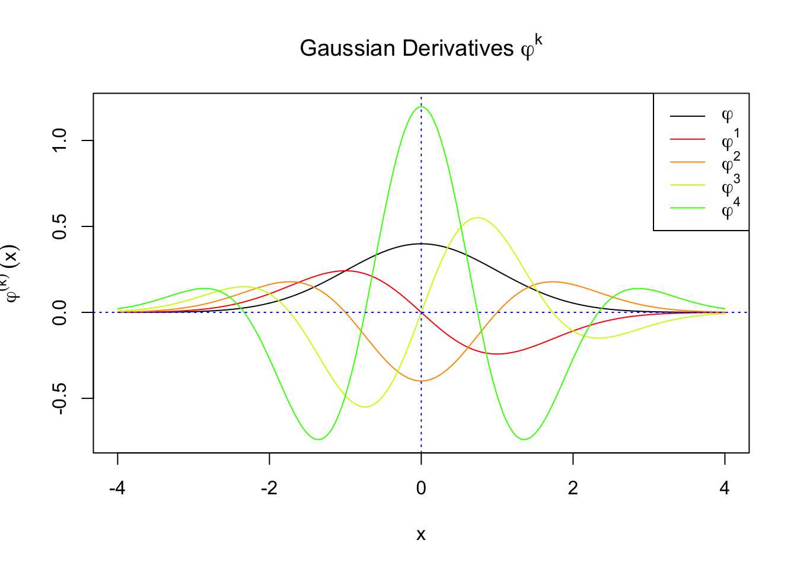
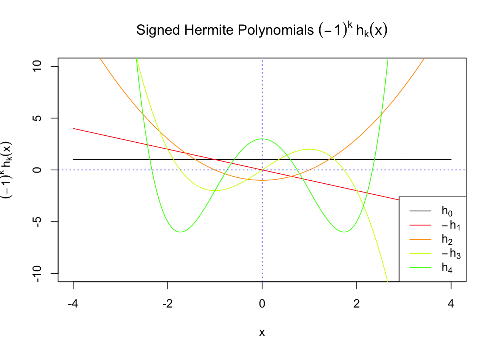
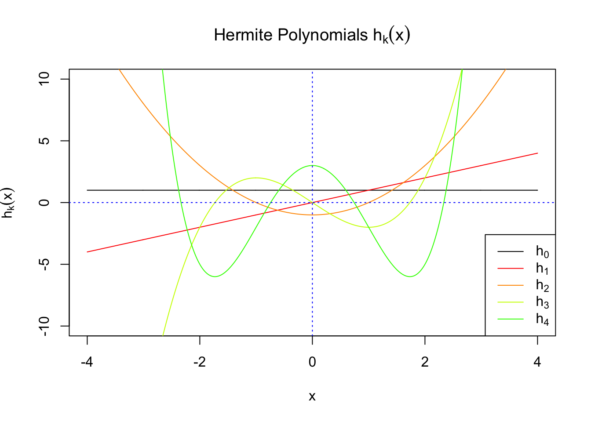
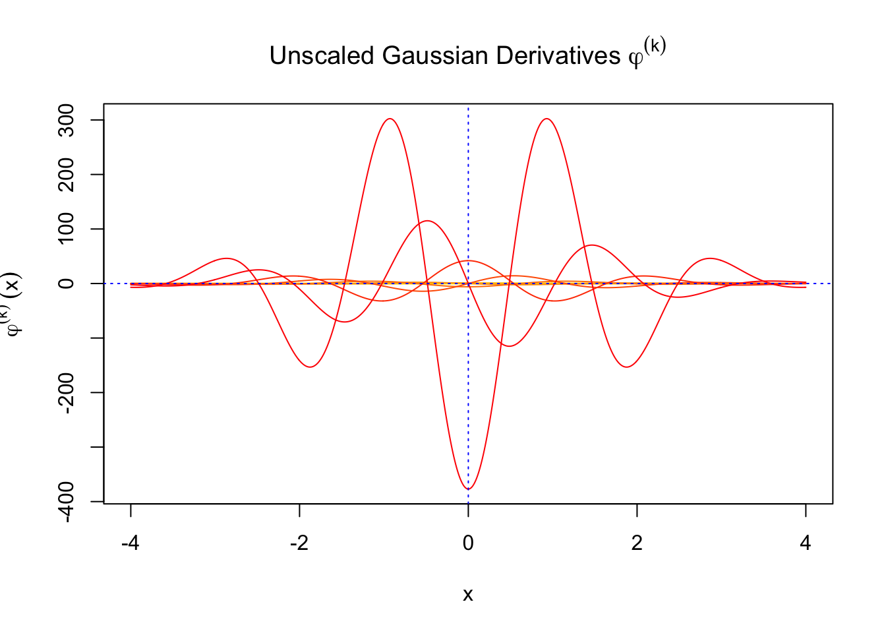
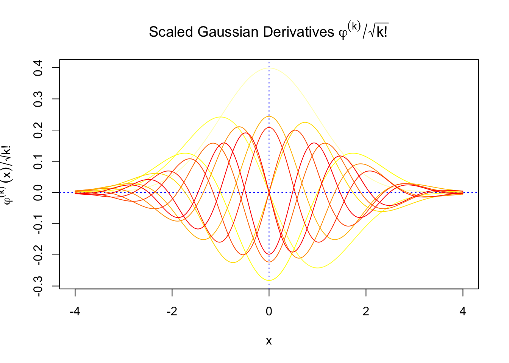
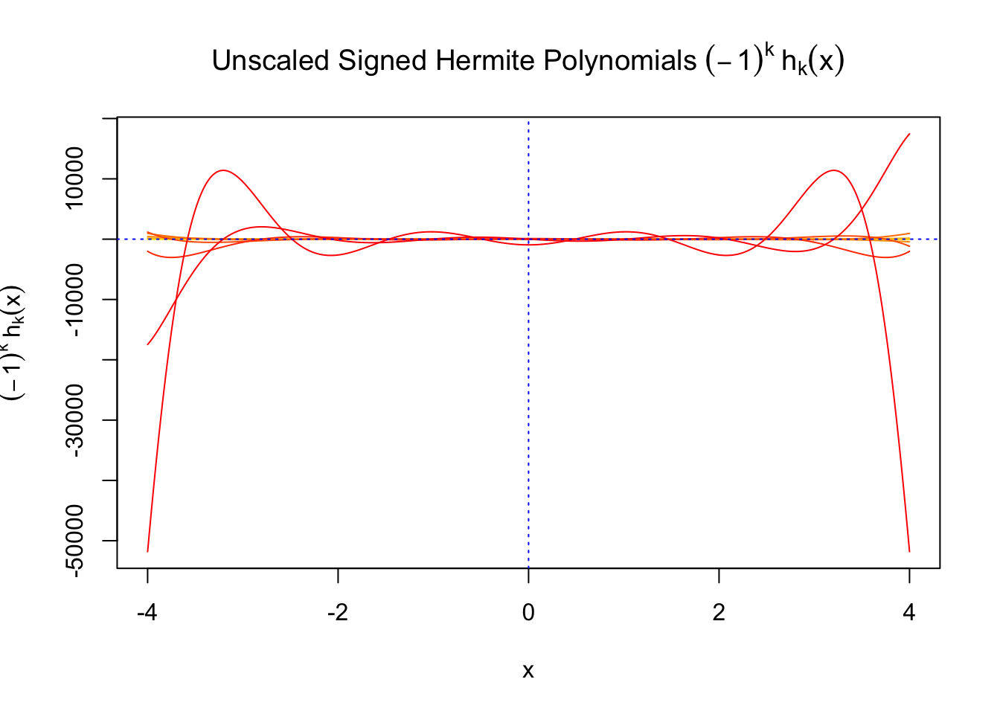
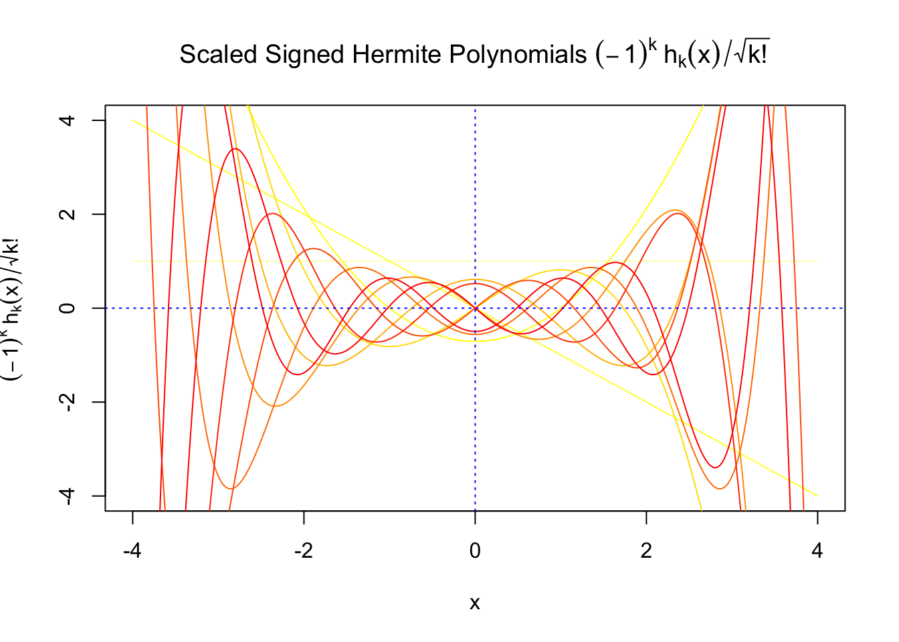
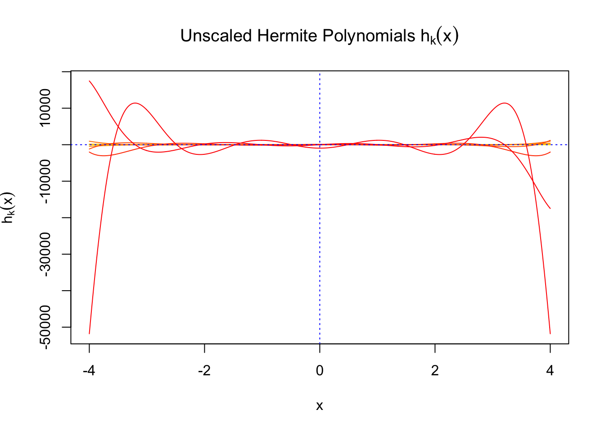
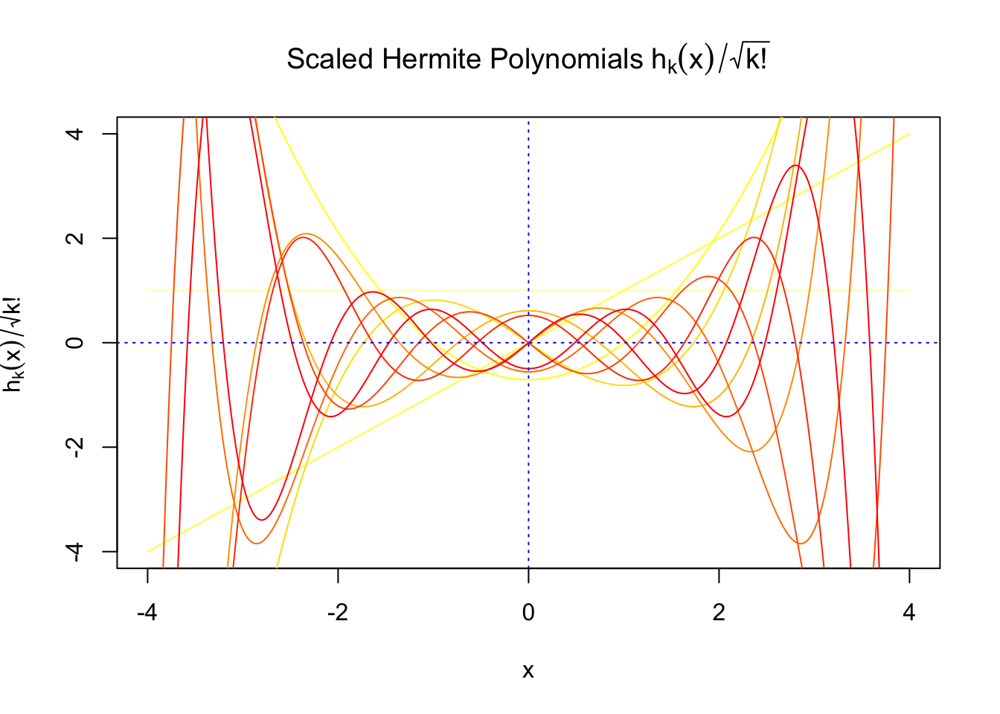

Last updated: 2017-11-07
Code version: 2c05d59
Correlation among summary statistics can distort hypothesis testing and signal estimation by making the observed statistics deviate from their theoretical distribution. See previous simulations (here, here, and here) for illustration.
Efron is his series of publications proposed an “empirical null” idea to tackle the correlation among \(z\) scores in the simultaneous inference setting. Essentially, he assumed that \(z\) scores from those null hypotheses among all hypotheses simultaneously considered should follow an “empirical null” distribution that’s different from their marginal \(N(0, 1)\), but still a normal with estimated mean and standard deviation, thus to produce what Efron terms as the “correlation induced inflation.”
However, as Matthew first noted, this doesn’t seem to hold true in our RNA-seq gene expression study. After transforming the original count data to \(z\) scores using limma and edgeR (see here for the pipeline), these \(z\) scores will have a \(N(0, 1)\) marginal distribution, but correlation makes their empirical distribution far from normal. Normality suggests that all observations should be inflated at the same time, yet oftentimes, the more moderate observations tend to be inflated, but not the more extreme ones. Indeed, if anything, the most extreme observations tend to be deflated. See previous simulations (here and here) for illustrations.
In his response to Efron’s paper, Schwartzman pointed out that “the core issue… is the behavior of a large collection of correlated normal variables.” Let \(z\) scores \(z_1, \ldots, z_n\) be \(N(0, 1)\) variables with pairwise correlations \(\rho_{ij} = \text{cor}(z_i, z_j)\), and \(\hat F(x) = \frac1n\sum\limits_{i=1}^n1(z_i\geq x)\), the right-sided empirical cdf of all \(z\) scores. Schwartzman showed that when the number of null hypothesis \(n\to\infty\), \(\hat F(x)\) approximates a random function \(F_0(x)\) generated as
\[ F_0(x) = \Phi^+(x) + \sum\limits_{k = 1}^\infty W_k\varphi^{(k - 1)}(x) \]
where \(\Phi^+(x) = 1 - \Phi(x)\) is the right-sided cdf of \(N(0, 1)\) and \(\varphi^{(k - 1)}(x)\) is the \((k - 1)^\text{th}\) order derivative of the pdf of \(N(0,1)\). \(W_k\)’s are independent random variables with mean \(0\) and variance \(\text{var}(W_k) = \alpha_k/k!\), where
\[ \alpha_k = \frac{2}{n(n-1)}\sum\limits_{i<j}\rho_{ij}^k = \int_{-1}^{1}\rho^kdG(\rho) \] is the \(k^\text{th}\) moment of \(G(\rho)\), the empirical distribution of all the \(n(n-1)/2\) pairwise correlations \(\rho_{ij}\).
Differentiating \(F_0(x)\) gives
\[ f_0(x) = \varphi(x) + \sum\limits_{k = 1}^\infty W_k\varphi^{(k)}(x) \] which can be seen as approximating the density of the observed distribution of correlated \(z\) scores when the number of them \(n\) is large. Or in other words, \(f_0(x)\) can be seen as to describe the histogram of those \(z\) scores.
\(f_0(x)\) involves Gaussian derivatives \(\varphi^{(k)}\), and many properties of them have been thoroughly studied. For starters, they are closely related to the probabilists’ Hermite polynomials \(h_k\) in that
\[ \varphi^{(k)}(x) = (-1)^kh_k(x)\varphi(x) \] where \(h_k(x)\) is defined by its generating function
\[ \begin{array}{rcl} h_k(x) &=& (-1)^ke^{\frac{x^2}{2}}\frac{d^k}{dx^k} e^{-\frac{x^2}{2}}\\ &=& \left(x - \frac{d}{dx}\right)^k\cdot1 \end{array} \] The relationship gives
\[ \begin{array}{rcl} f_0(x) &=& \varphi(x) + \sum\limits_{k = 1}^\infty W_k(-1)^kh_k(x)\varphi(x)\\ &=& \varphi(x)\left(1 + \sum\limits_{k = 1}^\infty W_kh_k(x)\right)\\ &=& \sum\limits_{k = 0}^\infty W_kh_k(x)\varphi(x) \end{array} \] The simplification comes from the observation that \(W_k\)’s are zero mean independent random variables, so all \((-1)^k\) can be absorbed into \(W_k\). Furthermore, let \(W_0\equiv1\), and use the fact that \(h_0(x)\equiv1\), so \(f_0(x)\) can be written in a more compact way.
Probabilists’ Hermite polynomials are orthogonal with respect to \(\varphi(x)\), the pdf of \(N(0, 1)\). That is,
\[ \int_{-\infty}^\infty h_k(x)h_l(x)\varphi(x)dx = \begin{cases} k! & k = l \\0 & k\neq l \end{cases} \] This orthogonality gives us
\[ W_k = \frac{1}{k!}\int_{-\infty}^\infty f_0(x)h_k(x)dx \] With \(W_k\)’s defined and obtained this way,
\[ \begin{array}{rcl} F_0(x) &=& \displaystyle\int_{-\infty}^x f_0(u)du \\ &=& \displaystyle\int_{-\infty}^x \sum\limits_{k = 0}^\infty W_k h_k(u)\varphi(u)du\\ &=& \displaystyle\int_{-\infty}^x \sum\limits_{k = 0}^\infty W_k(-1)^k(-1)^k h_k(u)\varphi(u)du\\ &=& \displaystyle\int_{-\infty}^x \sum\limits_{k = 0}^\infty W_k(-1)^k \varphi^{(k)}(u)du\\ &=& \displaystyle\int_{-\infty}^x \varphi(u)du + \sum\limits_{k = 1}^\infty W_k(-1)^k \displaystyle\int_{-\infty}^x\varphi^{(k)}(u)du\\ &=& \displaystyle\Phi(x) + \sum\limits_{k = 1}^\infty W_k(-1)^k \varphi^{(k - 1)}(x)\\ &=& \displaystyle\Phi(x) + \sum\limits_{k = 1}^\infty W_k(-1)^k(-1)^{k - 1} h_{k-1}(x)\varphi(x)\\ &=& \displaystyle\Phi(x) - \sum\limits_{k = 1}^\infty W_kh_{k-1}(x)\varphi(x) \end{array} \]

The expectation of \(W_k^2\) vanishes in the order of \(k!\), and the average \(h_k^2\) also scales in the order of \(k!\), and we can define “scaled” version of these functions and quantities:
\[ \begin{array}{c} \varphi_s^{(k)} = \frac1{\sqrt{k!}}\varphi^{(k)}\\ h_k^s(x) = \frac1{\sqrt{k!}}h_k(x)\\ W_k^s = \sqrt{k!}W_k \end{array} \]
We can see that the scaled Gaussian derivatives (\(\varphi_s^{(k)}\)) and Hermite polynomials \(h_k^s(x)\) are basically in the same order of magnitude for increasing orders. Therefore, it might make more sense to think of certain quantities in terms of their scaled versions
\[ \begin{array} {rcl} f_0(x) &=& \varphi(x)\left(1 + \sum\limits_{k = 1}^\infty W_kh_k(x)\right)\\ &= & \varphi(x)\left(1 + \sum\limits_{k = 1}^\infty W_k^sh_k^s(x)\right) \end{array} \]

Given \(z\) scores \(z_1, \ldots, z_n\) with known marginal distribution \(N(0, 1)\) but unknown correlation, their (right-sided) empirical cdf \(\hat F(x)\) can be observed. Then these \(z\) scores can be seen as if they are independently and identically sampled from this observed empirical cdf.
Furthermore, when \(n\) is sufficiently large, this observed empirical cdf approximates a cdf \(F_0(x)\) which has a density
\[ f_0(x) = \varphi(x)\left(1 + \sum\limits_{k = 1}^\infty W_kh_k(x)\right) \] Therefore, with observed \(z\) scores, we can fit \(f_0\) with estimated (realized) \(W_k\). One way of doing that is by maxmimum likelihood. In particular, we maximize the approximated log-likelihood
\[\log\prod\limits_{i = 1}^nf_0(z_i) = \sum\limits_{i = 1}^n\log f_0(z_i) = \sum\limits_{i = 1}^n\log \varphi(z_i) + \sum\limits_{i = 1}^n\log\left(1 +\sum\limits_{k = 1}^\infty w_kh_k(z_i)\right) \]
by a constrained optimization problem
\[ \begin{array}{rl} \max\limits_{w_1, w_2, \ldots} & \sum\limits_{i = 1}^n\log\left(1 +\sum\limits_{k = 1}^\infty w_kh_k(z_i)\right)\\ \text{s.t.} & \int_{-\infty}^{\infty}f_0(x)dx=1\Leftrightarrow \sum\limits_{k = 1}^\infty w_k\int_{-\infty}^\infty h_k(x)\varphi(x)dx = 0\\ & f_0(x) \geq 0 \Leftrightarrow 1 + \sum\limits_{k = 1}^\infty w_kh_k(x) \geq0, \forall x\in\mathbb{R} \end{array} \] The first constraint is self-satisfied for all \(w\): \(\int_{-\infty}^\infty h_k(x)\varphi(x)dx = 0\) for any \(k\geq1\) since \(h_k\) and \(h_0 \equiv1\) are orthogonal with respect to \(\varphi\).
The second constraint and the objective are intractable in the present form because of the involvement of \(\infty\). Therefore we need to make another two key assumptions as follows.
We assume that the pairwise correlation \(\rho_{ij}\) are on average moderate enough, such that the influence of \(W_kh_k\) will vanish for sufficiently large \(k\). Note that it doesn’t hold true in general. Recall that
\[ \text{var}(W_k) = \alpha_k / k! = \bar{\rho_{ij}^k} / k! \leq 1/k! \ , \] so it seems \(W_k^2\) will vanish in factorial order, yet on the other hand,
\[ \int_{-\infty}^\infty h_k^2(x)\varphi(x)dx = k! \]
so \(h_k^2\) also scales in factorial order. Therefore, it’s not at all clear that the influence of \(W_kh_k\) will decay in the most general case. So the decay of higher orders largely rely on the decay of higher order empirical moments of pairwise correlation \(\alpha_k\), which characterizes \(\rho_{ij}^k\).
As a result, we here assume that \(\rho_{ij}\)’s are on average moderate, so \(\alpha_k\) decays faster, leading to faster decaying of \(W_k\), probably as well as that of \(W_kh_k\). Ignoring this assumption would cause problem at least theoretically, as detailed later.
With this assumption, we can stop at a large \(K\); that is, \(f_0(x) = \varphi(x)\left(1 + \sum\limits_{k = 1}^K W_kh_k(x)\right)\). We also need to specify a method to choose \(K\) in a systematic way.
We further assume that the number of observations \(n\) is sufficiently large, so that we can use the \(n\) observed \(z\) scores in place of the intractable all \(x\in\mathbb{R}\) in the second constraint.
That is, \(1 + \sum\limits_{k = 1}^K w_kh_k(z_i) \geq0\). Ignoring this assumption would also lead to numerical instability, as detailed later.
With these assumptions, the problem is now a convex optimization.
\[ \begin{array}{rl} \max\limits_{w_1, \ldots, w_K} & \sum\limits_{i = 1}^n\log\left(1 +\sum\limits_{k = 1}^K w_kh_k(z_i)\right)\\ \text{s.t.} & 1 + \sum\limits_{k = 1}^K w_kh_k(z_i) \geq0 \end{array} \] It can also be written as
\[ \begin{array}{rl} \max\limits_{w} & \sum\log\left(1 +Hw\right)\\ \text{s.t.} & 1 +Hw \geq0 \end{array} \]
where \(H_{ik} = h_k(z_i)\).
sessionInfo()R version 3.4.2 (2017-09-28)
Platform: x86_64-apple-darwin15.6.0 (64-bit)
Running under: macOS Sierra 10.12.6
Matrix products: default
BLAS: /Library/Frameworks/R.framework/Versions/3.4/Resources/lib/libRblas.0.dylib
LAPACK: /Library/Frameworks/R.framework/Versions/3.4/Resources/lib/libRlapack.dylib
locale:
[1] en_US.UTF-8/en_US.UTF-8/en_US.UTF-8/C/en_US.UTF-8/en_US.UTF-8
attached base packages:
[1] stats graphics grDevices utils datasets methods base
loaded via a namespace (and not attached):
[1] compiler_3.4.2 backports_1.1.1 magrittr_1.5 rprojroot_1.2
[5] tools_3.4.2 htmltools_0.3.6 yaml_2.1.14 Rcpp_0.12.13
[9] stringi_1.1.5 rmarkdown_1.6 knitr_1.17 git2r_0.19.0
[13] stringr_1.2.0 digest_0.6.12 workflowr_0.7.0 evaluate_0.10.1This R Markdown site was created with workflowr